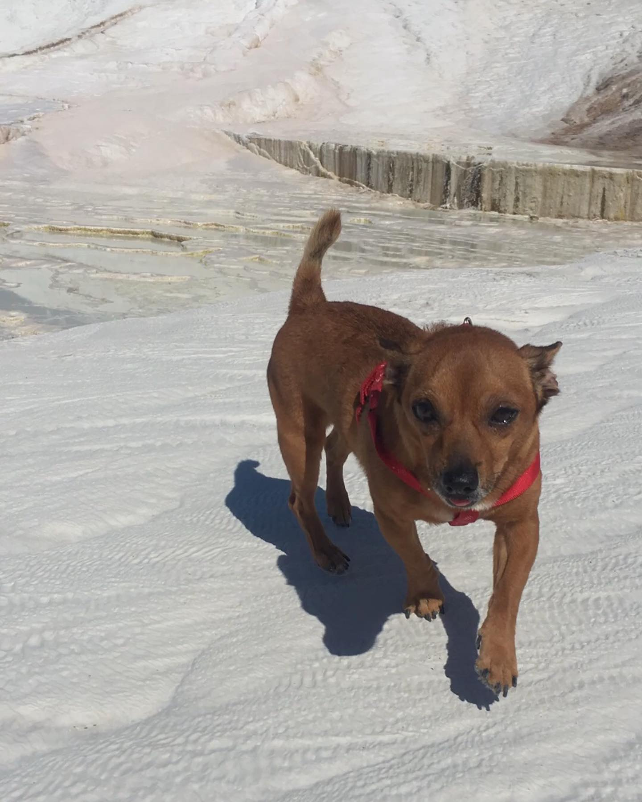

Müzik Yaşamı
Ödüller

Kıtmir kariyerine barlarda canlı müzik yaparak başlamıştır. Kadıköy' de çıktığı barlarda sevilen Kıtmir 2017 yılında, Pony ile beraber kurdukları 'KP' isimli müzik grubu ile Türkiye çapında düzenlenen "Sing Your Song" beste yarışmasında 1574 adayı geride bırakarak sssssssssP 'Talking To The Moon' adlı parçası ile birinci olmuştur.
| Ad Soyad | Kıtmir Ateş |
| Doğum Yeri | London |